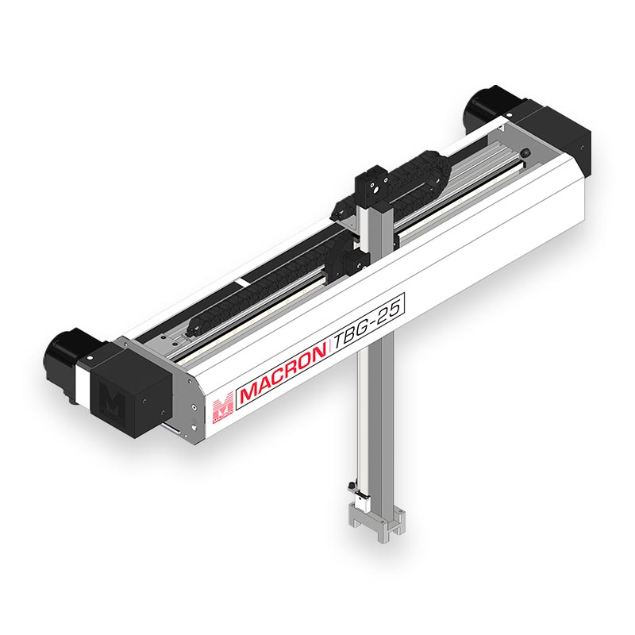
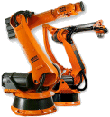

Robotersystem
Grundlegender Aufbau eines Industrierobotersystems
Ein Industrieroboter ist eine programmierbare Maschine, die ein Werkzeug über mehrere Achsen bewegt. In der Fertigung kann er zum Beispiel ein Bauteil mit einem Greifer umsetzen oder mit einer Düse eine Klebenaht auftragen. Beim Kleben zählt beides: Die Spitze der Düse muss der Naht folgen und die Düse im passenden Winkel zur Oberfläche stehen. Wie der Roboter diese Bewegungen ausführt, hängt vom Aufbau seiner Glieder und Gelenke ab.
Vom Bewegungsauftrag bis zum Werkstück: Wähle einen markierten Begriff, um seine Funktion am Roboter zu sehen.
Gestell
Das Gestell verbindet den Roboter mit dem Boden und nimmt die Kräfte des Arms auf.
Glied
Dieses starre Armstück verbindet Schulter und Ellenbogen. Dreht sich die Schulter, bewegt sich das Glied mit.
Gelenk
Am Ellenbogen treffen zwei Glieder aufeinander. Das Drehgelenk lässt genau eine Relativbewegung zu: eine Drehung um seine Achse.
Drehachse
Die gestrichelte Linie ist die gedachte Drehachse des Ellenbogens. Der Antrieb verändert den Gelenkwinkel um diese Linie. Der gebogene Pfeil zeigt die Drehrichtung.
Greifer
Der Greifer ist das Werkzeug am Ende des Arms. Seine Finger nehmen das Werkstück auf.
Steuerung
Die Steuerung gibt die Sollbewegung vor. Der Antrieb bewegt das Gelenk. Ein Geber meldet die gemessene Stellung zurück.
Unterscheidung der Achsarten
Kinematische Verknüpfung der Achsen
Die Anzahl der Achsen allein verrät noch nicht, wie sich das Werkzeug bewegt. Orange kennzeichnet die beweglichen Glieder, Grau die Gelenke. Verfolge in beiden Bildern den mechanischen Weg vom Gestell bis zu den metallgrauen Greifbacken.
Stärken und Grenzen im Vergleich
| Merkmal | Serielle Kinematik | Parallelkinematik |
|---|---|---|
| Zugang | Der Knickarm kann das Werkstück von oben, seitlich oder schräg anfahren. | Beim klassischen dreiachsigen Delta bleibt die Plattform gleich ausgerichtet. Ein senkrechter Prüfstift lässt sich daher nicht in eine seitliche Bohrung einschwenken. |
| Dynamik | Die Schulter bewegt die nachfolgenden Glieder mit. | Die geringe bewegte Masse ermöglicht kurze Greifzyklen. |
| Belastung | Bei großer Ausladung steigt das Moment an der Schulter. | Mehrere Ketten leiten die Werkzeugkraft gemeinsam ins Gestell. |
| Steifigkeit | Bei weit ausgestrecktem Arm kann die Werkzeugspitze unter seitlicher Kraft stärker nachgeben. | Mehrere Ketten stützen die Plattform. Dadurch kann sie unter derselben Kraft weniger nachgeben. |
Die Bewertung vergleicht typische Knickarm- und Delta-Roboter für die genannten Aufgaben.
Bauformen und Arbeitsräume
Typische Roboterbauformen
Der Arbeitsraum umfasst die erreichbaren Positionen eines festgelegten Werkzeugpunkts. Öffne eine Bauform. Das orangefarbene Volumen zeigt erreichbare Werkzeugpositionen. Drehe die Ansicht, um Höhe, Tiefe und Aussparungen zu erkennen. Die genaue Form hängt von Achswegen, Gelenkgrenzen und Werkzeug ab.
Serielle Kinematiken

PortalroboterDetails anzeigen
Quader zwischen den Endlagen der drei Schlitten.
Drei aufeinander aufbauende Linearachsen verfahren in X, Y und Z. Ohne zusätzliche Drehachse bleibt der Greifer gleich ausgerichtet.
Typische Anwendungen
- Blechtafeln von einer Palette auf einen Schneidtisch umsetzen.
- Mehrere Werkzeugmaschinen entlang einer Fertigungslinie mit Rohteilen beladen.
Bewegung beobachten
Wie lassen sich Längsfahrt, Querfahrt und Hub im Film unterscheiden?
 SCARADetails anzeigen
SCARADetails anzeigen
Der Hub gibt dem ringförmigen Ausschnitt seine Höhe.
Zwei Drehachsen schwenken den Arm in der Ebene. Die Hubachse senkt den Greifer. Eine vierte Achse kann das Werkstück um die Vertikale drehen.
Typische Anwendungen
- Buchsen senkrecht in eine Montageplatte einsetzen.
- Elektronikbauteile aus einem Tray entnehmen und auf einem Prüfplatz ablegen.
Bewegung beobachten
Welche Bewegung transportiert die Batterie über die Fläche, welche setzt sie ab?

KnickarmroboterDetails anzeigen
Schematische Hülle mit Sicht in den Innenraum durch einen Anschnitt.
Sechs Drehgelenke bilden eine Kette. Die Stellung des Arms und die Drehung des Handgelenks bestimmen zusammen Position und Orientierung des Werkzeugs.
Typische Anwendungen
- Eine Klebenaht über mehrere Seiten eines Gehäuses ziehen.
- Einen Schweißbrenner entlang einer räumlich gekrümmten Naht führen.
Bewegung beobachten
Wie muss sich das Handgelenk bewegen, damit der Brenner im gewünschten Winkel an der Naht bleibt?
Parallelkinematik
 DeltaroboterDetails anzeigen
DeltaroboterDetails anzeigen
Das erreichbare Volumen liegt unter dem festen Gestell.
Drei rotatorische Hauptantriebe bewegen mehrere Arme gemeinsam. Beim klassischen dreiachsigen Delta verschiebt sich die Plattform in X, Y und Z bei gleichbleibender Orientierung.
Typische Anwendungen
- Pralinen vom Förderband in Schachteln einsortieren.
- Beutel auf einem laufenden Band greifen und für die Verpackung gruppieren.
Bewegung beobachten
Ab 0:55 werden Varianten verglichen. Was gewinnt der Greifer durch eine vierte Achse?
Selbsttest · 5 Minuten
Roboter für vier Stationen auswählen
Welche Bauform würdest du an jeder Station einsetzen? Überlege dir jeweils einen technischen Grund. Drehe dann die Kachel um und vergleiche deine Entscheidung mit dem Lösungsvorschlag.
Wissen prüfen
Wähle pro Frage eine Antwort.